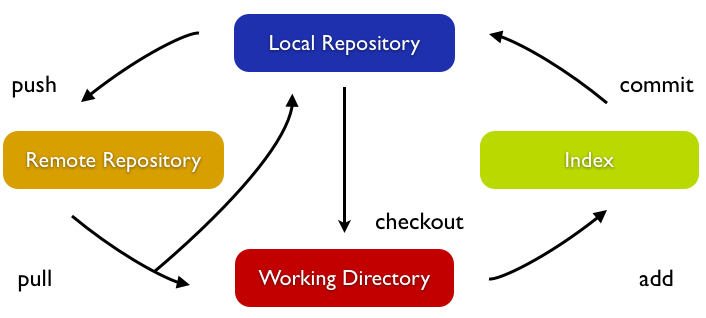

Home
The Alloy Tool
Introduction to Git
The Git WorkFlow
The Git Object Model
Git Basic Operations
Git Add
Git Rm
Git Commit
Git Not So Basic Operations
Git Branch
Git Checkout
Git Merge
The truth about Git
The Git WorkFlow
Git Workflow
Here goes an image

Figure 1